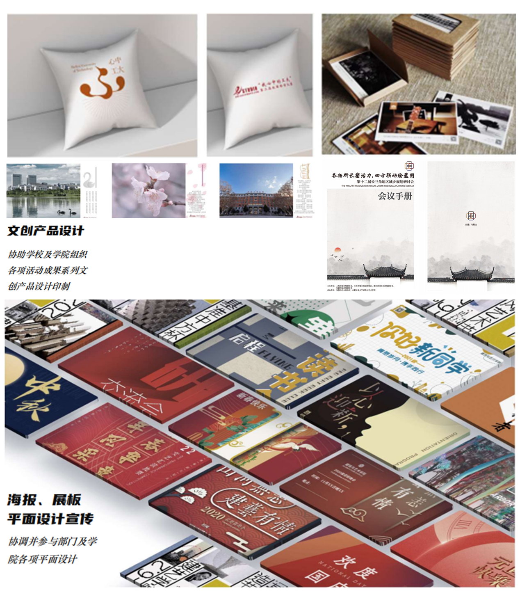
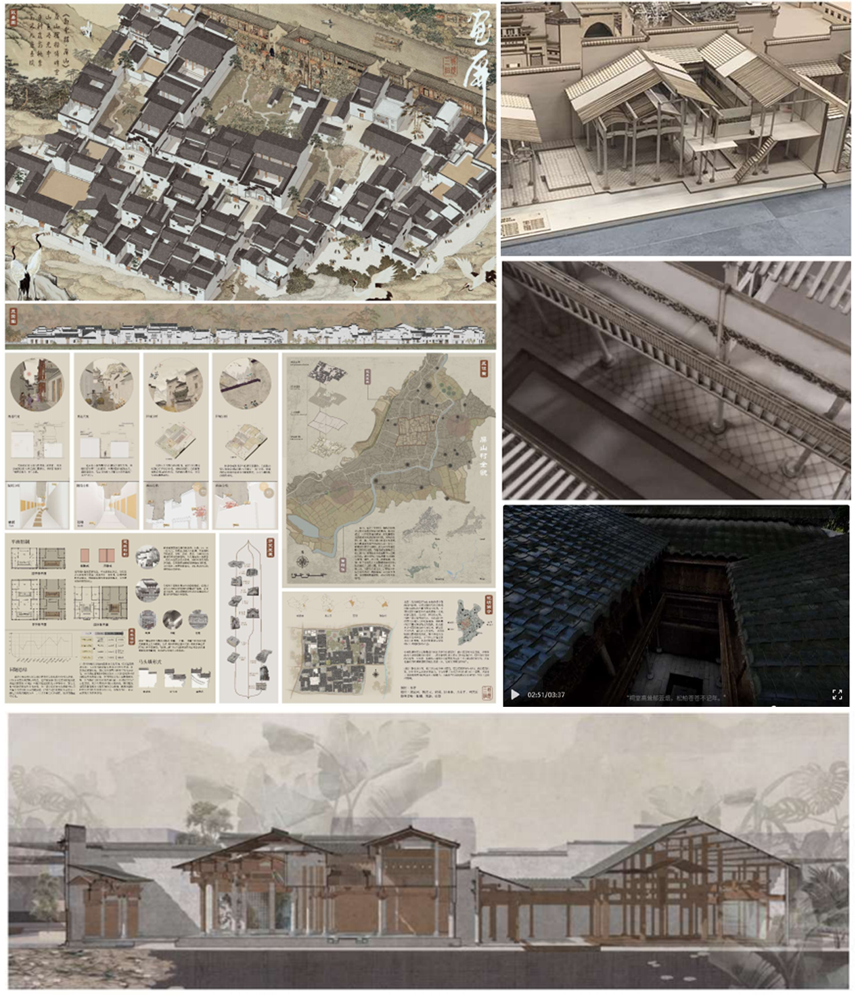

艺术表达

基于多源交通数据构建通勤OD关系网络，能够完成大规模出行数据的清洗、匹配与结构化表达， 并通过空间分析与建模方法提取城市通勤模式，实现复杂流动关系的可视化表达。

具备海报设计与文创产品设计经验，熟悉视觉传达基本原理，包括版式设计、色彩搭配、 字体运用与图形创意。能够独立完成从主题分析、草图构思到最终视觉输出的完整流程。

具备空间测绘与建筑表达能力，能够完成复杂环境下的空间信息采集与精细化表达， 熟练进行建筑与聚落尺度的数字建模与图纸转化。具备制作实体模型与数字影像等能力。